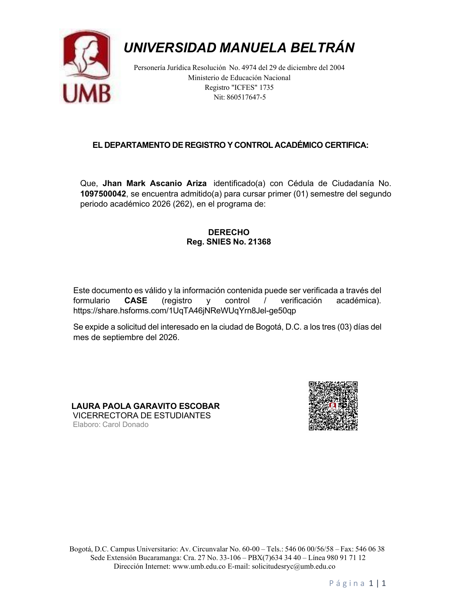

Automatización de Trámites Académicos en Producción
Desarrollo completado: validación de certificados con código QR. Ya desarrollamos la funcionalidad del robot que agrega un código QR en cada certificado para validar que fue emitido por la Universidad Manuela Beltrán. Ver funcionalidad y certificado de ejemplo
La implementación de Blue Prism en el Centro de Atención y Servicio al Estudiante (CASE) ha gestionado de forma automatizada 865 solicitudes en producción, eliminando tiempos muertos y devolviendo 144.2 horas de trabajo operativo al equipo de atención universitaria.
Indicadores de Impacto & Valor Devuelto a la UMB
Métricas de eficiencia calculadas con un estándar de 10 minutos de atención humana por caso
8.650 minutos de trabajo humano liberados para orientar al estudiante en retención, bienestar y tutorías académicas.
Entrega ágil en el mismo día para solicitudes requeridas en subsidios de cajas de compensación, becas y créditos educativos ICETEX.
Capacidad probada para absorber picos masivos de matrícula (517 trámites en septiembre) manteniendo la bandeja en cero acumulación.
Atención ininterrumpida de lunes a sábado cubriendo a estudiantes nocturnos, virtuales y de fines de semana sin sobrecosto laboral.
Demanda por Trámite
865 TotalDistribución entre Certificados de Estudio (93.8%) y Certificados de Horarios (6.2%).
Horas Devueltas por Mes
144.2 HorasTiempo operativo mensual recuperado por el CASE durante el periodo de producción.
Fortalezas del Servicio CASE
Principios rectores de la automatización que garantizan valor al estudiante y a la universidad:
- Atención 100% Digital: Entrega directa de los certificados oficiales en formato PDF firmado y seguro.
- Continuidad Asegurada por NBI: Infraestructura en la nube provista sin costo para asegurar el servicio continuo.
- Alta Disponibilidad: Operación desasistida cada 2 horas garantizando tiempos mínimos de respuesta.
- Trazabilidad y Auditoría: Registro íntegro de radicados, fechas de envío y respuestas en HubSpot CRM.
Validación de certificados con QR — Desarrollo completado
Hemos desarrollado una funcionalidad en el robot de Blue Prism que incorpora un código QR en cada certificado generado, para facilitar la validación de que el documento fue emitido por la Universidad Manuela Beltrán.
- El robot genera el certificado e incorpora el código QR en el documento.
- El destinatario escanea el QR desde su dispositivo móvil.
- El código permite acceder al mecanismo de verificación del certificado para validar su emisión por la universidad.
Esta mejora facilita la verificación documental para estudiantes, empleadores y otras entidades que reciben los certificados.
